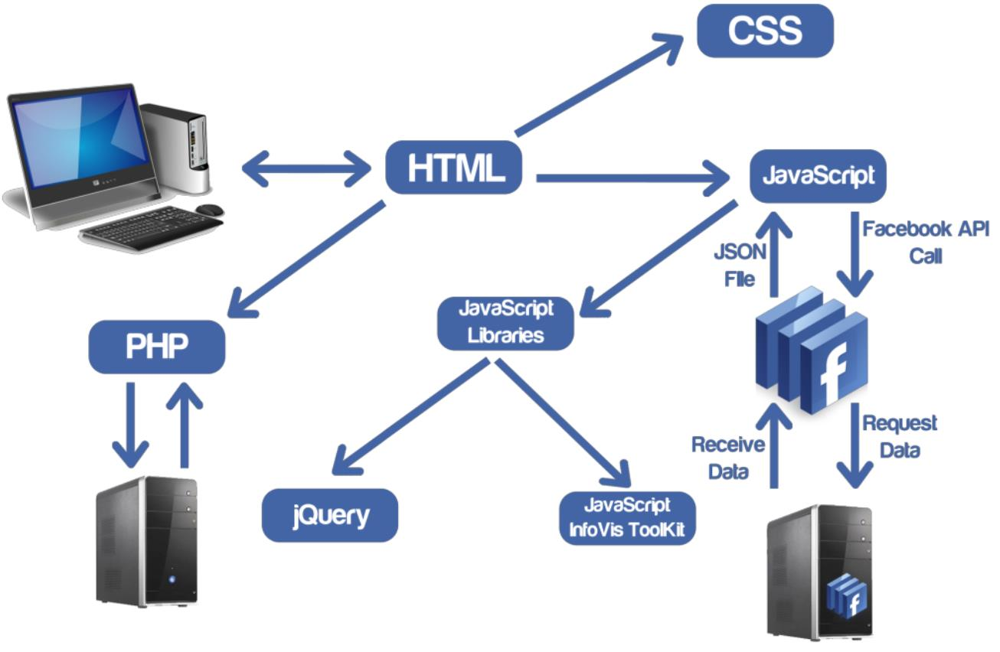
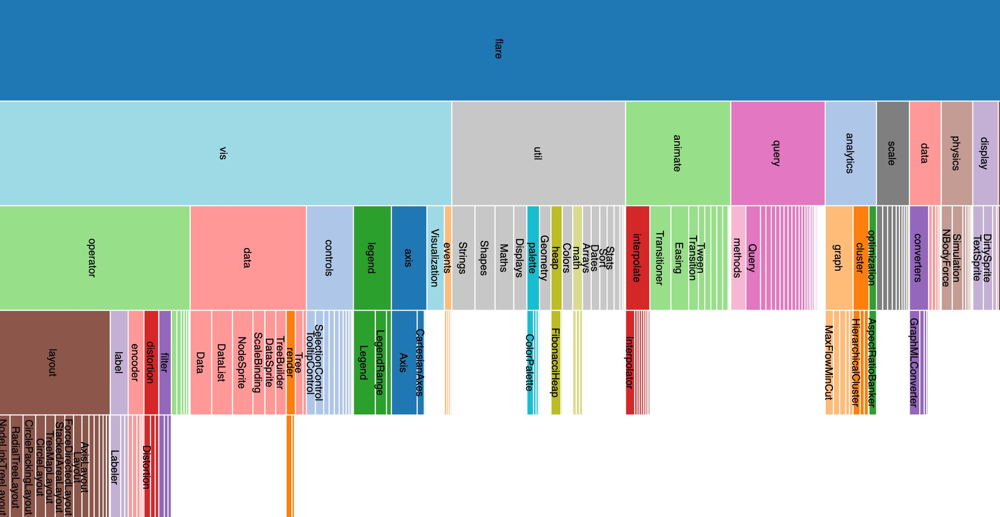
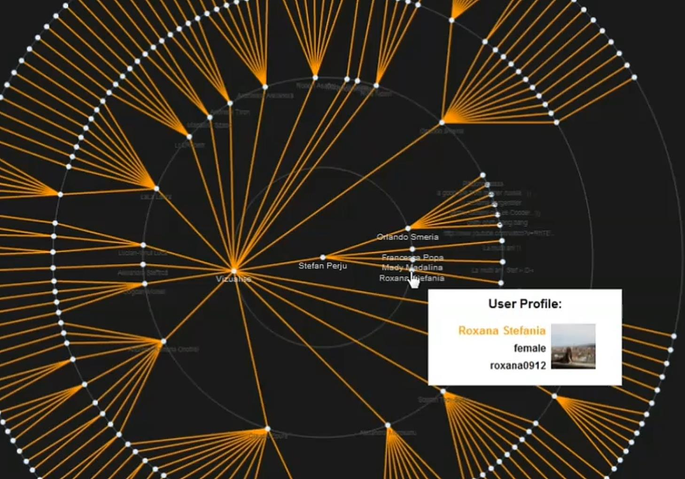
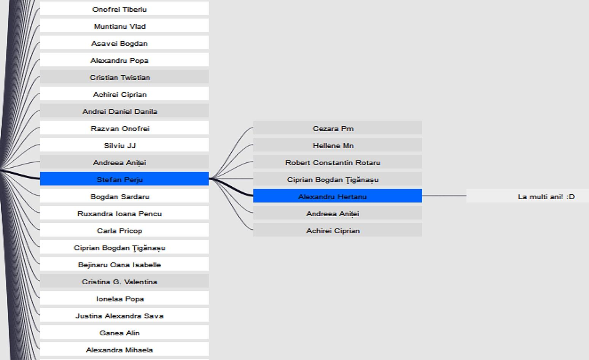

Data publicării: 02.10.2019
Autor articol: Sabin Buraga
Introducere
Domeniul vizualizării datelor a luat amploare în ultimele decenii, fiind considerat foarte important în arii precum analiza volumelor mari de date (big data), interacțiune om-calculator (human computer interaction), reprezentarea cunoștințelor (knowledge representation) și multe altele. Diverse considerații, aspecte de interes, exemplificări, instrumente software etc. sunt disponibile în prelegerea din cadrul materiei “Human-Computer Interaction” (Buraga, 2019), predată de autor în cadrul studii de master oferite de Facultatea de Informatică a Universității “Alexandru Ioan Cuza” din Iași, România.
Subiectul acestui articol este cel al vizualizării datelor din cadrul unei aplicații de tip rețea socială, în vederea studierii gradului de interconectivitate a utilizatorilor și a analizei dinamicii mesajelor vehiculate între aceștia. Ca studiu de caz concret, s-a ales Facebook – actualmente, una dintre cele mai populare aplicații Web sociale, inclusiv la nivel organizațional (Caplan & boyd, 2018).
Soluția software face parte din contribuțiile originale ale absolventului Ștefan-Alexandru Perju pentru obținerea titlului de licențiat în informatică.
Secțiunile principale ale materialului de față sunt dedicate prezentării generale a conceptului de rețea socială, apoi asupra cerințelor de bază, arhitectura generală și metodele de vizualizare furnizate în aplicația Web dezvoltată.
Ce este o rețea socială virtuală?
În acest context, lucrarea (boyd, 2007) afirmă: “Rețelele sociale virtuale sunt ultima generație de “spațiu public mediat” – un spațiu în care oamenii se pot aduna într-o zonă publică mediată de tehnologie. Într-o anumită măsură, spațiile mediate sunt similare cu cele non-mediate, precum parcuri, mall-uri, parcări, cafenele etc. Adolescenții sunt acolo pentru a se conecta cu prietenii lor. Alte persoane aflate în preajmă pot participa la discuție, dacă subiectul este interesant, sau o pot ignora. Spațiul public are multiple roluri în viaţa socială – permite indivizilor să dea un sens normelor sociale care reglementează societatea, lasă oamenii să se exprime și să înveţe din reacțiile celorlalți (…), să participe la experiențele celorlalți. Rețelele sociale virtuale sunt o altă formă de spațiu public.”
Mai formală am putea afirma că o rețea socială reprezintă un graf format dintr-un număr însemnat de noduri (entități umane) și dintr-un set complex de legături între aceste noduri. O rețea socială virtuală include reprezentări simbolice și vizuale ale fiecărui participant (de cele mai multe ori, sub forma unui profil, plus a unui număr de reprezentări de tip avatar), legăturile sociale, dar și alte servicii adiționale. Majoritatea rețelelor sociale actuale, deosebit de populare, sunt disponibile pe Web, oferind utilizatorilor posibilități de a interacționa online prin maniere multiple, sincrone și/sau asincrone.
Rețelele sociale virtuale oferă utilizatorilor premisele pentru a împărtăși simple mesaje, idei, activități, evenimente, conținut multimedia (de la fotografii până la înregistrări audio-video și experiențe virtuale), inclusiv dezinformări și orice alte resurse susceptibil a servi unor interese comune. Caracterul participatoriu conferă dinamicitate oricărei rețele sociale (Jenkins et al., 2015).
Scopuri și cerințe
Scopul principal al aplicației implementate a fost cel de a ajuta un utilizator dat să vizualizeze facil și plăcut anumite date din cadrul Facebook. Dacă un participant dorește să verifice activitatea unui grup de persoane, Facebook pune la dispoziție doar informaţii directe specifice acelui grup (utilizatori, mesaje transmise în cadrul grupului). Însă, în cazul în care se intenționează vizualizarea activității membrilor unui grup și legăturile directe dintre acești membri, este nevoie de timp și de răbdare, deoarece nu se oferă o metodă directă de vizualizare a tuturor legăturilor.
Drept exemplu realist, dacă un anumit manager al unei companii vrea să verifice grupul ce include toți angajații, el va putea vizualiza numai discuțiile publice din cadrul grupului. Poate ar dori să cunoască rapid interesele angajaților, în vederea inițierii unei sesiuni de team building. Sistemul creat ar trebuie să ofere suport în acest sens.
Așadar, în primul rând trebuie evidențiată funcționalitatea aplicației: aceea de a oferi metode diferite de vizualizare pentru anumite date obținute dinamic pe baza API-urilor puse la dispoziție de Facebook. Utilizatorului i se oferă posibilitatea să selecteze ce date dorește să vizualizeze și maniera lor de redare.
Un alt aspect important este legat de asigurarea interactivității, mai ales în ceea ce privește utilizabilitatea sistemului propus. Fiind vorba de proiectarea unei interfețe Web, minimal se vor utiliza HTML, CSS și JavaScript, eventual cu aportul diverselor biblioteci și/sau framework-uri disponibile.
Nu în ultimul rând, trebuie considerate cerințele referitoare la securitate, în general, și la confidențialitate și asigurarea intimității (privacy), în special. Pentru accesul la datele Facebook via OAuth 2.0 este necesară obținerea așa-numitelor jetoane de acces (access tokens), în funcție de acordarea de către utilizatorul final a unor permisiuni. Această autorizare se realizează pe baza diverselor permisiuni – e.g., age_range, email (acces la adresa de e-mail a unui utilizator), public_profile, user_birthday, user_hometown, user_friends, user_likes, user_photos, rsvp_event și altele.
Pentru cerințele axate asupra performanței aplicației, restricția principală trebuie să fie viteza de încărcare a paginilor și a vizualizărilor generate (de exemplu, conținutul textual oferit utilizatorului să fie redat în medie în mai puțin de 1 secundă).
Arhitectura software
Schema următoare prezintă principalele componente și tehnologii folosite la implementarea sistemului de vizualizare interactivă descris mai sus.
Principalele activități sunt realizate la nivel de client (front-end) pe baza bibliotecilor jQuery și JavaScript InfoViz Toolkit. Prima este utilizată pentru facilitarea interacțiunii cu utilizatorul și preluarea asincronă a datelor de la Facebook, iar cea din urmă pune la dispoziție funcționalitățile legate de vizualizarea propriu-zisă a rețelei sociale a unui utilizator, conform celor menționate anterior.
Desigur, aplicația poate fi extinsă prin oferirea unei palete mai largi de prelucrări și vizualizări de interes. O altă facilitate viitoare este aceea de a corela/augmenta datele oferite de Facebook cu altele, disponibile pe alte aplicații Web cu caracter social (de pildă, LinkedIn, GitHub, Reddi sau Twitter).

Vizualizări oferite
Pe baza naturii datelor (graf vizând interacțiuni sociale între diverse persoane), s-au ales următoarele metode de vizualizare:
- Icicle Tree Visualization – redarea unui arbore generat direct din fișierul JSON (JavaScript Object Notation) obținut asincron în urma invocării API-ului Facebook. Reprezintă o vizualizare prin care se pot parcurge toate nodurile arborelui, în mod dinamic, fiind foarte ușor de manipulat. Un exemplu e ilustrat de graficul de mai jos, preluat de la <http://bl.ocks.org/mbostock/4347473>.
- RGraph – se referă la crearea unui arbore hiperbolic (HyperTree), având rădăcina în centru și noduri-copil dispuse concentric la distanțe egale de rădăcină (în coordonate polare). Este facil de manipulat și de înțeles, oferind metode simple de parcurgere ierarhică.
- SpaceTree – principalele caracteristici ale acestui tip de vizualizare sunt ușurința cu care se pot manevra nodurile arborelui și oferirea doar a informațiilor de care utilizatorul are nevoie la un moment dat, evitându-se astfel supraîncărcarea cognitivă. Astfel, se ascund nodurile inutile, ele devenind vizibile doar atunci când un utilizator le apelează explicit. Un alt avantaj este acela că, în momentul în care se apelează un nod de pe frontieră, va fi evidențiată calea până la rădăcină.

O reprezentare vizuală a arborelui hiperbolic creat de aplicație poate fi urmărită în figura următoare.

Figura de mai jos reprezintă un exemplu concret de vizualizare creată direct de aplicația Web descrisă.

Referințe bibliografice
- boyd, d., “Social Network Sites: Public, Private, or What?”, Knowledge Tree 13, 2007.
- Buraga, S., Situl Web al disciplinei “Human-Computer Interaction”, Facultatea de Informatică, UAIC, 2019: http://profs.info.uaic.ro/~busaco/teach/courses/hci/
- Caplan, R., boyd, d., “Isomorphism through algorithms: Institutional dependencies in the case of Facebook”, Big Data & Society, 5(1), 2018.
- Jenkins, H., Ito, M., boyd, d.. Participatory Culture in a Networked Era, Polity Press, 2015.
- Perju, S.A., “Metode de vizualizare a datelor disponibile în cadrul rețelelor sociale. Studiu de caz: Facebook”, Lucrare de licență, Facultatea de Informatică, UAIC, 2013.
- * * *, Facebook Permissions Reference, 2019: http://developers.facebook.com/docs/facebook-login/permissions/v2.0
- * * *, JavaScript InfoVis Toolkit, 2019: http://philogb.github.io/jit/
- * * *, OAuth 2.0, 2019: http://oauth.net/2/